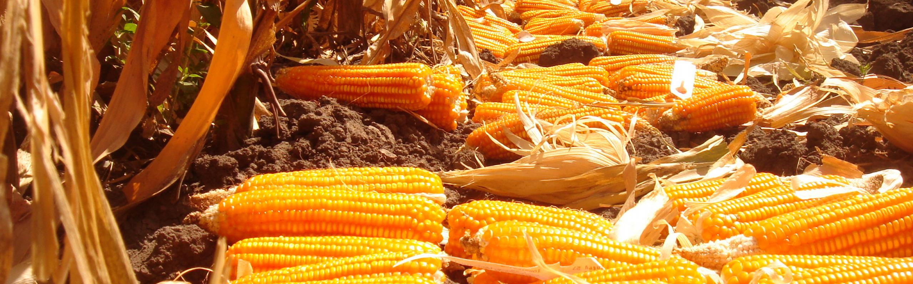
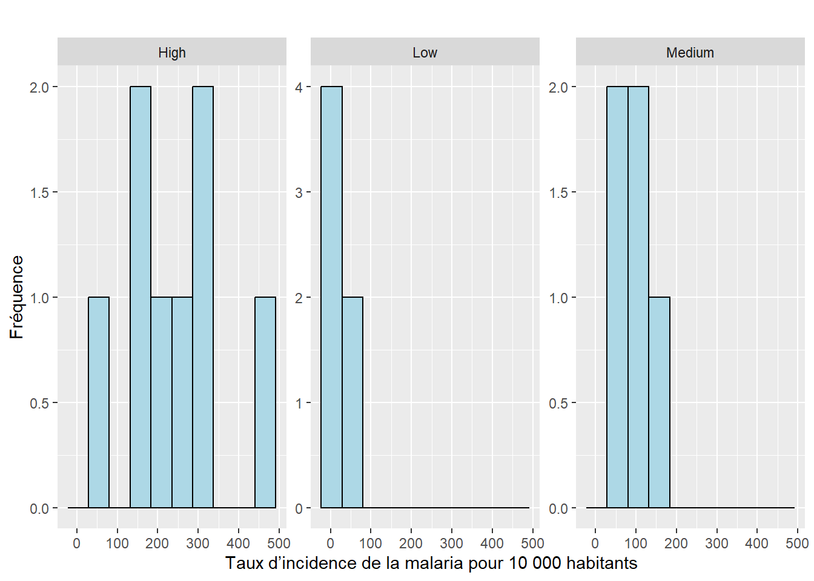
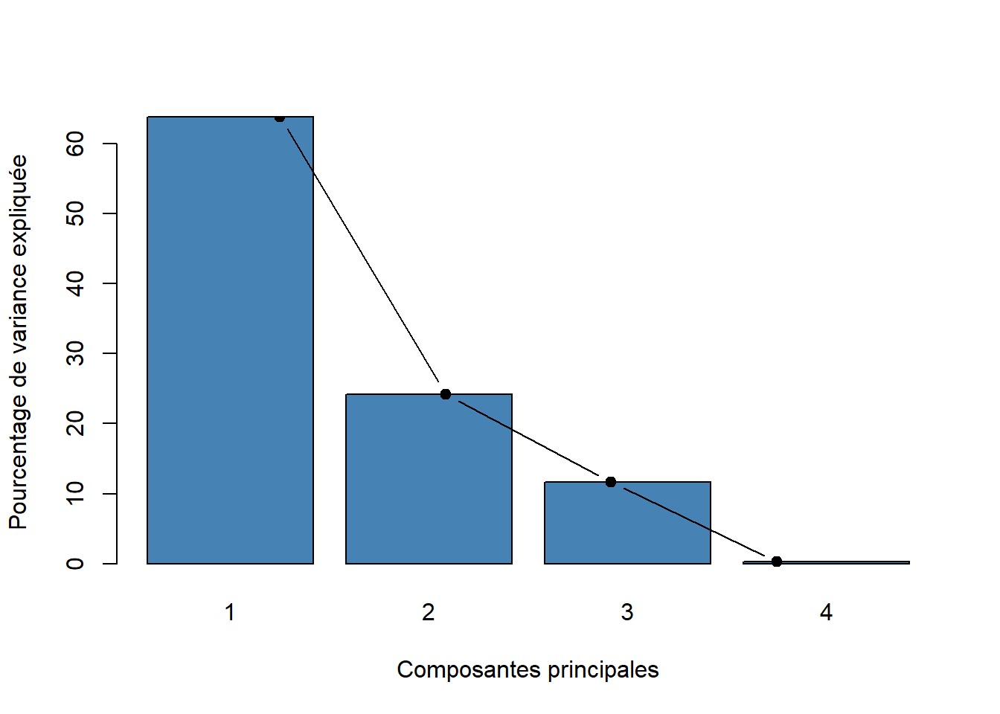
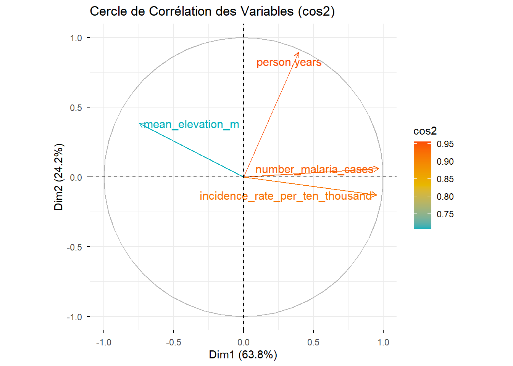

library(ggplot2)
library(dplyr)
library(car)
library(readxl)
library(factoextra)
library(FactoMineR)
library(remotes)
library(factoextra)
library(corrplot)
library(FSA)Facteurs agricoles et propagation du paludisme
Analyse descriptive et multivariée de l’incidence du paludisme
Exercice 1 - Facteurs agricoles et propagation du paludisme
Les packages qui seront utiles dans cet exercice.
Le pollen du maïs (Zea mays) constitue une source de nourriture pour les larves de moustiques de l’espèce Anopheles arabiensis, principal vecteur de la malaria en Éthiopie. La production de maïs a augmenté de manière substantielle dans certaines régions d’Éthiopie ces dernières années et, sur la même période la malaria s’est étendu à de nouvelles zones où la maladie était auparavant rare. Cela soulève la question suivante :
L’augmentation de la culture du maïs est-elle en partie responsable de l’augmentation de la malaria en Éthiopie ?

Une approche consiste à rechercher une association entre la production de maïs et l’incidence de la malaria dans différents sites géographiquement dispersés (Kebede et al. (2005)).
Le jeu de données « malaria vs maize.csv » contient des informations sur plusieurs variables :
village: nom du village où les mesures ont été réalisées (ils sont tous différents)maize_yield: niveau de production de maïs (Low,Medium,High)mean_elevation_m: altitude du villageperson.years: nombre d’habitants dans le village recensénumber_malaria_cases: nombre de cas de malaria recensé dans le villageincidence_rate_per_ten_thousand: taux d’incidence de la malaria pour 10 000 habitants
On cherche à déterminer s’il existe une association statistique entre la culture du maïs et le taux d’incidence de la malaria.
Analyse descriptive
On importe la base de données sur R afin de réaliser quelques analyses descriptives.
data_ethiopia = read.csv("data_raw/malaria_vs_maize.csv")
head(data_ethiopia) village maize_yield mean_elevation_m person.years
1 Gulim High 2050 23458
2 Denbun High 2050 20630
3 Wadra High 2050 12805
4 Zalimashebekuma High 2050 16857
5 Adel Agata High 2050 12805
6 Fetamsantom High 2050 18333
number_malaria_cases incidence_rate_per_ten_thousand
1 683 291
2 88 43
3 170 133
4 370 219
5 226 176
6 552 301str(data_ethiopia)'data.frame': 19 obs. of 6 variables:
$ village : chr "Gulim" "Denbun" "Wadra" "Zalimashebekuma" ...
$ maize_yield : chr "High" "High" "High" "High" ...
$ mean_elevation_m : int 2050 2050 2050 2050 2050 2050 2050 2050 2200 2200 ...
$ person.years : int 23458 20630 12805 16857 12805 18333 18384 16063 12079 26223 ...
$ number_malaria_cases : int 683 88 170 370 226 552 857 395 71 218 ...
$ incidence_rate_per_ten_thousand: int 291 43 133 219 176 301 466 246 59 83 ...summary(data_ethiopia) village maize_yield mean_elevation_m person.years
Length:19 Length:19 Min. :2050 Min. :10960
Class :character Class :character 1st Qu.:2050 1st Qu.:12975
Mode :character Mode :character Median :2200 Median :16857
Mean :2155 Mean :16590
3rd Qu.:2200 3rd Qu.:18359
Max. :2450 Max. :26223
number_malaria_cases incidence_rate_per_ten_thousand
Min. : 5.0 Min. : 3.0
1st Qu.: 68.5 1st Qu.: 39.0
Median :170.0 Median : 83.0
Mean :224.6 Mean :129.4
3rd Qu.:298.0 3rd Qu.:197.5
Max. :857.0 Max. :466.0 table(data_ethiopia$maize_yield)
High Low Medium
8 6 5 ggplot(data_ethiopia, aes(x = incidence_rate_per_ten_thousand)) +
geom_histogram(bins = 10, fill = "lightblue", color = "black") +
facet_wrap(~ maize_yield, scales = "free_y") +
labs(
title = "",
x = "Taux d’incidence de la malaria pour 10 000 habitants",
y = "Fréquence"
)
stats <- data_ethiopia %>%
group_by(maize_yield) %>%
summarise(
Moyenne = mean(incidence_rate_per_ten_thousand),
Ecart_type = sd(incidence_rate_per_ten_thousand),
n = n()
)
stats# A tibble: 3 × 4
maize_yield Moyenne Ecart_type n
<chr> <dbl> <dbl> <int>
1 High 234. 126. 8
2 Low 17.7 17.1 6
3 Medium 95.4 41.4 5Analyse factorielle
Dans cette partie, on considère l’ensemble des variables quantitatives du jeu de données (y compris le taux d’incidence transformé).
var.quanti = sapply(data_ethiopia, is.numeric)
data.quanti = data_ethiopia[, var.quanti]data.CR <- scale(data.quanti,center = TRUE,scale=TRUE)
pca.data <- PCA(data.CR, graph = FALSE)
vp = pca.data$eig
vp eigenvalue percentage of variance cumulative percentage of variance
comp 1 2.55336548 63.8341370 63.83414
comp 2 0.96946355 24.2365888 88.07073
comp 3 0.46711731 11.6779328 99.74866
comp 4 0.01005365 0.2513413 100.00000barplot(vp[, 2],
names.arg=1:nrow(vp),
main = "",
xlab = "Composantes principales",
ylab = "Pourcentage de variance expliquée",
col ="steelblue")
lines(x = 1:nrow(vp),
vp[, 2],
type="b",
pch=19,
col = "black")
fviz_pca_var(pca.data,
col.var = "cos2",
gradient.cols = c("#00AFBB", "#E7B800", "#FC4E07"),
repel = TRUE,
title = "Cercle de Corrélation des Variables (cos2)")
Les références
Kebede, A., McCANN, J. C., Kiszewski, A. E., et Ye-Ebiyo, Y. (2005). New evidence of the effects of agro-ecologic change on malaria transmission. The American journal of tropical medicine and hygiene 73: 676‑680.